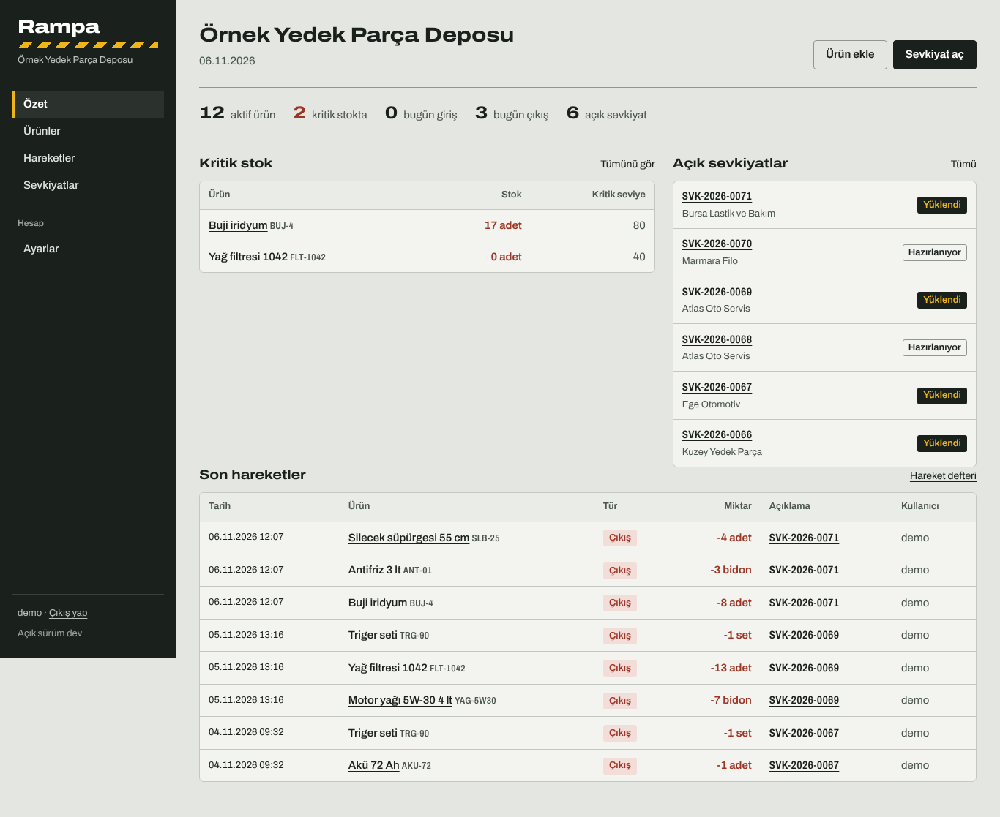
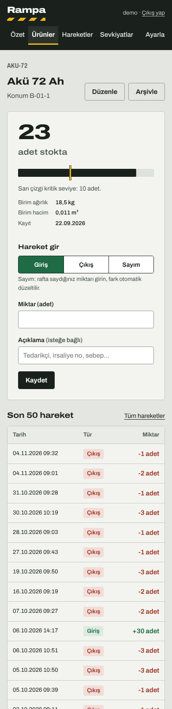

Depo, rampada yönetilir.
Küçük ve orta ölçekli depolar için stok, giriş/çıkış ve sevkiyat takibi. Tek dosya, kurulum yok: indir, çalıştır, tarayıcıda aç. İnternet olmasa da çalışır.

Bir depo görevlisinin gününe göre
Mal kabul, raf, sevkiyat, araç, teslim. Ürünü bulursun, büyük stok rakamını görürsün, girişi ya da çıkışı iki dokunuşla kaydedersin.
- Tek işlemde yükleme. Bir satırda stok yetmezse hiçbir şey düşülmez; yarım kalmış sevkiyat olmaz.
- Ondalıklı miktar. kg, metre, litre için
12,5ya da1.250yaz; miktarlar kayan nokta hatası olmadan binde bir hassasiyetle tutulur. - Excel'de doğru açılan CSV. Türkçe karakterler, noktalı virgül ve formül enjeksiyonuna karşı koruma.
- Kritik stok uyarısı ve günlük özet: kaç giriş, kaç çıkış, kaç açık sevkiyat.
- Yönetici ve depo kullanıcısı rolleri; giriş denemelerinde hız sınırı, katı güvenlik başlıkları.
- Telefonda rahat. Rampada eldivenle bile basılabilecek büyük düğmeler.

İki dakikada çalışır
Sunucu, veritabanı ya da internet bağlantısı gerekmez. Veriler aynı klasördeki tek bir dosyada durur; yedek için o dosyayı kopyalamak yeter.
- İndir
Windows, Linux ya da macOS için dosyayı Releases sayfasından al. - Çalıştır
./rampa - Aç
Tarayıcıdahttp://127.0.0.1:8080adresine git, yönetici hesabını oluştur.
Docker tercih edersen depodaki Dockerfile ile: docker build -t rampa . && docker run -p 8080:8080 -v rampa-data:/data rampa
Neyle yapıldı
Bağımlılık listesi bilerek kısa: SQLite sürücüsü dışında üçüncü parti Go paketi yok.
| Sunucu | Go, standart net/http | Tek, bağımlılıksız dosya; her platforma derlenir |
|---|---|---|
| Veritabanı | SQLite, CGO'suz sürücü | Kurulum yok, tek dosyada yedek, WAL ile eşzamanlı okuma |
| Arayüz | Sunucuda render edilen HTML + htmx | JavaScript derleme zinciri yok; JS kapalıyken de çalışır |
| Güvenlik | PBKDF2 600.000 tur, CSRF, katı CSP | OWASP önerileri; oturum belirteci yalnızca özet olarak saklanır |
Rampa Pro
Raporlar, kritik stok sipariş önerisi ve tır yükleme planı (LDM, palet yerleşimi, boşaltma sırası, ağırlık merkezi) ayrı, lisanslı bir sürümde. Açık sürüm tek başına eksiksiz çalışır. 14 günlük deneme için GitHub üzerinden yaz.